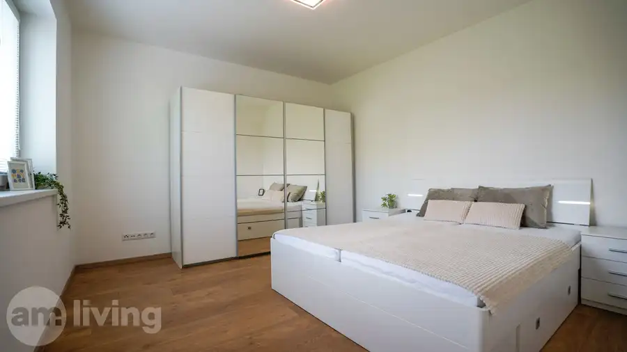
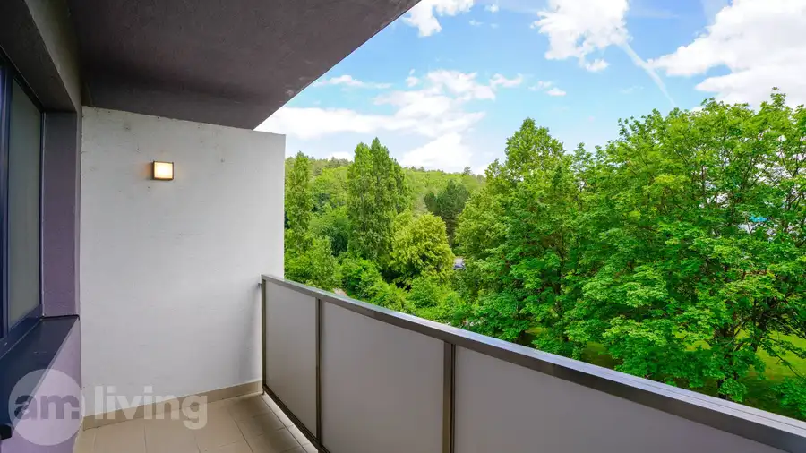
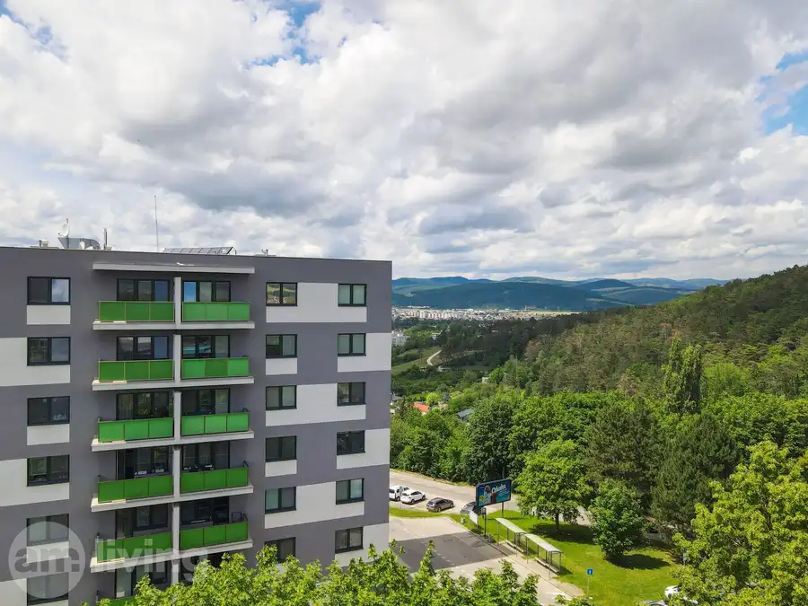
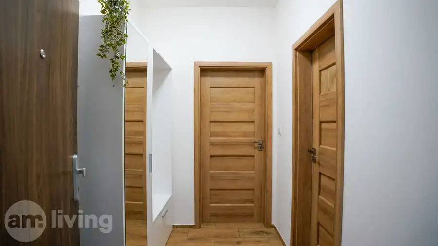
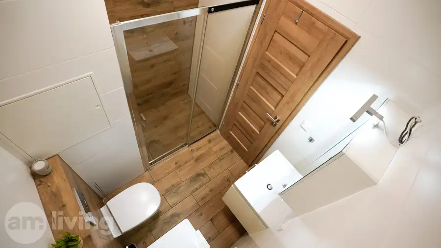
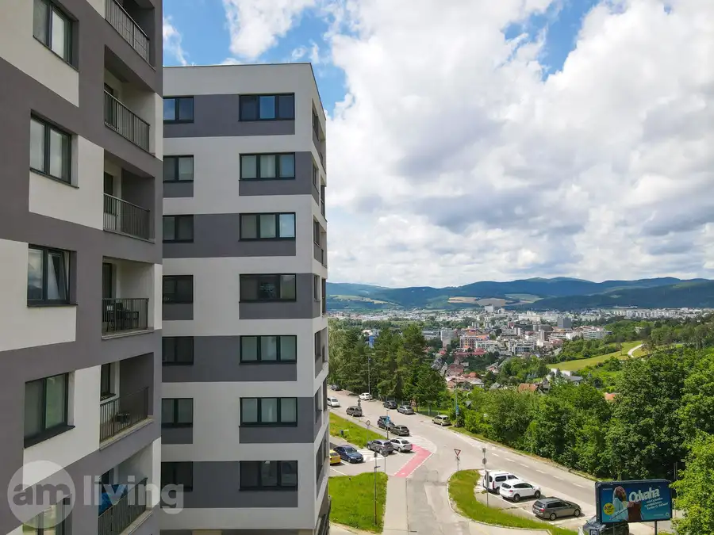
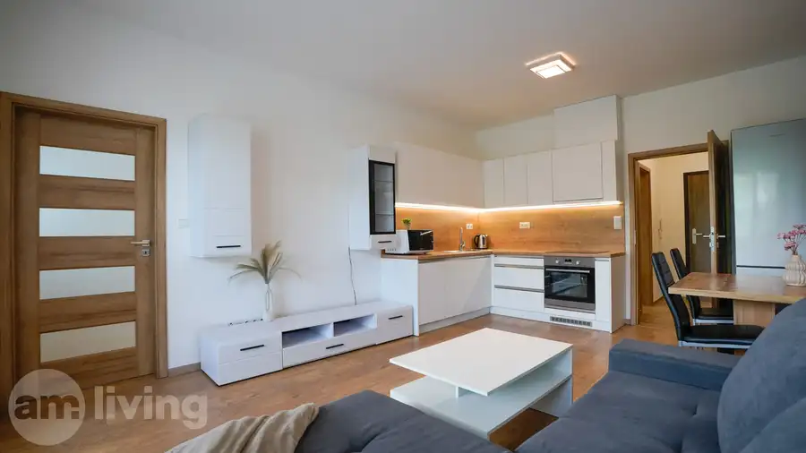

/ REZERVOVANÉ / 2i byt + parking + balkón v Geminim TRENČÍN
Trenčín








- Dispozícia2-izbový
- Plocha43.52 m²
- Poschodie3. z 7
- Stavúplne prerobený
- Vlastníctvoosobné
O nehnuteľnosti
AM LIVING realitná kancelária, Vám ponúka NOVOSTAVBU 2 izbového moderného bytu s balkónom, vlastným parkovaním a s krásnym výhľadom na Brezinu v bytovom komplexe Geminim na ul. Saratovskej v Trenčíne.
Hľadáte moderné bývanie, kde ráno začnete kávou na priestrannom balkóne s panoramatickým výhľadom a večer zaparkujete bez stresu na vlastnom mieste? Tento kompletne zariadený byt v tichej lokalite Trenčína je pripravený presne pre vás – stačí sa len nasťahovať.
Dispozícia:
Byt sa nachádza na ideálnom 3. poschodí zo 7. s veľkým výťahom v 6 ročnej novostavbe. Interiér bol navrhnutý s dôrazom na praktické využitie priestoru, dostatok úložného miesta a moderný dizajn. Dispozične sa byt skladá zo : vstupnej chodby, kúpeľne s geberitom a zaskleným sprchovacím kútom, veľkej obývacej miestnosti prepojenej s kuchyňou a s východom na balkón, priestrannej spálne. Pivničná murovaná uzamykateľná kopka, sa nachádza priamo pred bytom na chodbe.
Technický stav a Lokalita:
Byt má rozlohu o výmere 43,50m², balkón o výmere 5,70m², pivničnú kopku o veľkosti 1,30m², parkovacie miesto pre vozidlo v osobnom vlastníctve má 13m². Nehnuteľnosť je novostavba, a teda stav a kondícia bytového domu je na výbornej úrovni s energetickým certifikátom ''A'' triedy. Je situovaný v žiadanej a príjemnej tichej lokalite, kde sa nachádza na skok od bytu obchodné centrum Južanka, ktoré disponuje kompletnou občianskou vybavenosťou. V pešej dostupnosti nájdete potraviny, hypermarkety, školy, škôlky, kaviarne autobusová zástavka je priamo pred bytovkou, nové fitnesscentrum 365, športové ihriská, detské ihriská a mnoho iného. Nebude Vám chýbať ani množstvo zelene a priestoru na prechádzky či šport, nakoľko máte Brezinu priamo '' ako na dlani''. Výhodou je i vlastné vyhradené parkovanie za rampou, ktoré sa nachádza priamo pod oknami bytu. Byt má vlastné podlahové elektrické kúrenie.
A prečo si vybrať práve tento byt?
- Moderná zariadená novostavba s možnosťou okamžitého nasťahovania ✅
- Kúpou ihneď voľný - kľúče dostávate hneď po úhrade a môžete začať bývať ✅
- Nízke mesačné náklady. ✅
- Množstvo zelene a výborná lokalita s dávkou súkromia ✅
- Férová ponuka s dostupnou cenovkou ✅
- Vlastné parkovanie za rampou ✅
- TOP výhľady samozrejmosťou ✅
Byt je v osobnom vlastníctve. Odporúčame vidieť. Cena Bytu je vo výške 157 000€ + vonkajšie parkovacie miesto v hodnote 13 000€. Tešíme sa na obhliadky s Vami. V prípade záujmu o viac informácií, alebo obhliadku ma neváhajte kontaktovať aj počas víkendov na tel. č.
Parametre
- Celková rozloha
- 50.5 m²
- Úžitková plocha
- 43.52 m²
- Poschodie
- 3/vyššie poschodie
- Počet poschodí
- 7
- Vlastníctvo
- osobné
- Stav
- úplne prerobený
- Status
- aktívne
- Odvoz odpadu
- áno
- Internet
- optika
- Kúpeľňa
- sprchovací kút
- Vykurovanie
- vlastné
- Balkón
- áno
- Pivnica
- áno
- Výťah
- áno
- Parkovanie
- vlastné vyhradené
- Postavené z
- Zmiešané
- Zariadenie
- zariadený
- Zateplený objekt
- áno
- Energetický certifikát
- áno
- Bezbariérový prístup
- áno
- Okná
- plastové
- Orientácia
- juhovýchodná
- Novostavba
- áno
- Dátum zverejnenia
- 2026-06-14